K32 / K64 / RVQ-H5 联合编码报告
深圳与HM3D共用联合码本。K32、K64和RVQ均以未来5步、10步执行轨迹的终点FDE为主要目标，联合拟合码本和离线标签序列，两个步长使用同一条序列；整轨迹FDE和每步ADE只作辅助诊断。K32/K64每步1个运动token，分别32/64个运动码字加STOP=0，近直行前进距离间隔至少5cm。RVQ每步仍为3个残差token、每层256个选项，保持未来5节点的加和解码与小动作检查。本次更新K32和RVQ，K64沿用已完成的窗口FDE版。
HM3D 默认 K64；generation_pool 尚未划分训练、验证或测试集。
全量编码诊断 · 1,940,232 条轨迹 / 81,362,028 个运动节点
先看误差和数据覆盖
所有三个联合码本使用同一批真实保留节点；深圳还展示原有 K256。轨迹误差按轨迹等权，码频按运动节点计数；STOP 单独统计。所有指标均为拟合数据上的离线重建，不等于模型导航成功率。
| 分支 | ADE 均值 m | FDE 均值 m | FDE P95 m | FDE ≤1 m 的轨迹 | 末端航向误差均值 ° |
|---|---|---|---|---|---|
| K32 | 0.248 | 0.499 | 1.713 | 88.1% | 5.7 |
| K64 | 0.112 | 0.224 | 0.709 | 97.8% | 3.7 |
| RVQ | 0.033 | 0.066 | 0.231 | 99.8% | 0.8 |


真实动作与码本分布是否对得上
以全部 81,362,028 个真实运动目标为分母；前向坐标从 0 开始，左向坐标保留正负，代表左右方向。图中的黑白底色是数据的真实动作密度，后续叠加码本可看出高频区域与码字位置的关系。

真实目标中前向小于 −1e−6 m 的节点：0；二维热图范围之外的运动节点：0。
码本在哪里、哪些码字经常用
每张图的左侧用颜色连续表示转角，点面积随使用频率变化；右侧使用固定点大小及对数频率色标，便于看清低频码字。前向轴从零起，左向轴的正负区分左右。灰底是真实动作密度；白边小点代表每个真实码字。

查看 K32 每个码字的坐标、频率和误差
| ID | 前向 m | 左向 m | 转角 ° | 全量次数 | 占比 | 平均位置误差 cm |
|---|---|---|---|---|---|---|
| 1 | 0.2300 | 0.0000 | 0.00 | 6,155,672 | 7.566% | 2.32 |
| 2 | 0.0000 | -0.0000 | -29.14 | 3,831,961 | 4.710% | 0.05 |
| 3 | 0.1602 | 0.0000 | 0.00 | 2,589,882 | 3.183% | 3.35 |
| 4 | 0.1217 | -0.0029 | -4.38 | 2,018,760 | 2.481% | 1.97 |
| 5 | 0.2546 | 0.0032 | 4.22 | 2,811,621 | 3.456% | 2.81 |
| 6 | 0.3484 | -0.0396 | -0.50 | 2,117,105 | 2.602% | 5.00 |
| 7 | 0.0000 | -0.0000 | 39.57 | 232,095 | 0.285% | 0.00 |
| 8 | 0.7542 | 0.0000 | 0.00 | 1,321,101 | 1.624% | 2.55 |
| 9 | 0.1231 | 0.0019 | 4.72 | 2,763,722 | 3.397% | 2.09 |
| 10 | 0.3800 | 0.0000 | 0.00 | 4,888,275 | 6.008% | 2.17 |
| 11 | 0.3300 | 0.0000 | 0.00 | 8,135,852 | 10.000% | 2.11 |
| 12 | 0.1982 | -0.0075 | -6.97 | 1,479,261 | 1.818% | 3.29 |
| 13 | 0.8565 | 0.0000 | 0.00 | 969,494 | 1.192% | 3.06 |
| 14 | 0.0061 | 0.0000 | 18.05 | 1,610,068 | 1.979% | 0.93 |
| 15 | 0.0839 | 0.0191 | 18.68 | 620,955 | 0.763% | 2.36 |
| 16 | 0.5434 | 0.0000 | 0.00 | 2,444,776 | 3.005% | 2.02 |
| 17 | 0.0000 | 0.0000 | 31.86 | 1,050,617 | 1.291% | 0.04 |
| 18 | 0.0225 | 0.0001 | 13.82 | 1,147,492 | 1.410% | 3.12 |
| 19 | 0.0035 | 0.0000 | 21.38 | 2,088,310 | 2.567% | 0.46 |
| 20 | 0.0816 | -0.0153 | -16.06 | 1,009,001 | 1.240% | 2.29 |
| 21 | 0.6055 | 0.0000 | 0.00 | 1,920,061 | 2.360% | 2.12 |
| 22 | 0.4507 | -0.1482 | 11.97 | 10,055 | 0.012% | 6.70 |
| 23 | 0.0000 | 0.0000 | 27.21 | 1,794,749 | 2.206% | 0.05 |
| 24 | 0.0002 | 0.0000 | 24.17 | 2,179,932 | 2.679% | 0.08 |
| 25 | 0.9773 | 0.0000 | 0.00 | 567,353 | 0.697% | 2.67 |
| 26 | 0.4499 | 0.1468 | -10.77 | 9,615 | 0.012% | 7.21 |
| 27 | 0.4842 | 0.0000 | 0.00 | 2,760,123 | 3.392% | 2.11 |
| 28 | 0.4325 | 0.0000 | 0.00 | 3,372,078 | 4.145% | 2.06 |
| 29 | 0.2800 | 0.0000 | 0.00 | 10,612,911 | 13.044% | 1.66 |
| 30 | 0.6727 | 0.0000 | 0.00 | 1,300,691 | 1.599% | 2.46 |
| 31 | 0.3472 | 0.0405 | 0.30 | 1,741,141 | 2.140% | 5.02 |
| 32 | 0.0055 | -0.0000 | -20.58 | 5,807,299 | 7.138% | 0.75 |
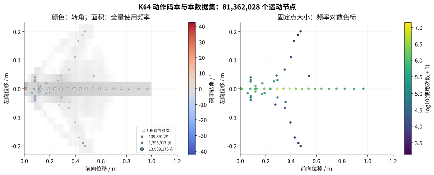
查看 K64 每个码字的坐标、频率和误差
| ID | 前向 m | 左向 m | 转角 ° | 全量次数 | 占比 | 平均位置误差 cm |
|---|---|---|---|---|---|---|
| 1 | 0.5386 | 0.0000 | 0.00 | 2,070,993 | 2.545% | 1.66 |
| 2 | 0.2386 | 0.0000 | 0.00 | 4,939,181 | 6.071% | 1.97 |
| 3 | 0.2002 | 0.0004 | -4.08 | 769,452 | 0.946% | 2.26 |
| 4 | 0.0798 | -0.0298 | -20.86 | 157,550 | 0.194% | 1.05 |
| 5 | 0.2564 | -0.0233 | -5.02 | 239,477 | 0.294% | 1.92 |
| 6 | 0.0000 | -0.0000 | -27.20 | 1,292,554 | 1.589% | 0.01 |
| 7 | 0.3886 | 0.0000 | 0.00 | 5,280,527 | 6.490% | 1.81 |
| 8 | 0.4147 | 0.0992 | -12.67 | 5,626 | 0.007% | 5.43 |
| 9 | 0.0071 | -0.0000 | -13.88 | 821,263 | 1.009% | 1.47 |
| 10 | 0.0844 | 0.0100 | 13.78 | 515,834 | 0.634% | 2.07 |
| 11 | 0.8988 | 0.0000 | 0.00 | 652,137 | 0.802% | 2.50 |
| 12 | 0.3386 | 0.0000 | 0.00 | 9,281,334 | 11.407% | 1.73 |
| 13 | 0.4772 | -0.2011 | 10.72 | 294 | 0.000% | 2.63 |
| 14 | 0.0000 | -0.0000 | -42.29 | 104,252 | 0.128% | 0.00 |
| 15 | 0.2029 | -0.0098 | -5.27 | 724,781 | 0.891% | 2.34 |
| 16 | 0.8144 | 0.0000 | 0.00 | 789,223 | 0.970% | 2.14 |
| 17 | 0.2995 | -0.0302 | -5.98 | 156,609 | 0.192% | 2.18 |
| 18 | 0.2619 | 0.0302 | 6.18 | 190,320 | 0.234% | 2.65 |
| 19 | 0.5624 | 0.0375 | -19.77 | 4,862 | 0.006% | 5.90 |
| 20 | 0.0000 | -0.0000 | -30.33 | 937,913 | 1.153% | 0.01 |
| 21 | 0.4386 | 0.0000 | 0.00 | 3,174,210 | 3.901% | 1.77 |
| 22 | 0.1137 | -0.0038 | -5.18 | 1,219,439 | 1.499% | 1.15 |
| 23 | 0.3828 | 0.0863 | 4.30 | 11,675 | 0.014% | 7.77 |
| 24 | 0.4457 | -0.0937 | 12.95 | 6,960 | 0.009% | 7.24 |
| 25 | 0.4387 | -0.1663 | 10.25 | 3,064 | 0.004% | 4.90 |
| 26 | 0.6963 | 0.0000 | 0.00 | 862,330 | 1.060% | 1.90 |
| 27 | 0.1246 | 0.0001 | 3.69 | 995,602 | 1.224% | 1.86 |
| 28 | 0.4886 | 0.0000 | 0.00 | 2,484,335 | 3.053% | 1.73 |
| 29 | 0.0662 | 0.0147 | 18.95 | 493,070 | 0.606% | 3.04 |
| 30 | 0.0761 | -0.0084 | -17.88 | 380,032 | 0.467% | 2.45 |
| 31 | 0.2463 | 0.0033 | -3.00 | 1,524,406 | 1.874% | 2.18 |
| 32 | 0.0003 | -0.0000 | -17.43 | 1,170,224 | 1.438% | 0.23 |
| 33 | 0.0774 | -0.0366 | -26.10 | 33,613 | 0.041% | 1.20 |
| 34 | 0.0000 | 0.0000 | 36.52 | 487,711 | 0.599% | 0.00 |
| 35 | 0.1886 | 0.0000 | 0.00 | 2,003,856 | 2.463% | 2.10 |
| 36 | 0.1193 | 0.0001 | -3.62 | 897,571 | 1.103% | 1.44 |
| 37 | 0.0979 | -0.0221 | -11.08 | 147,771 | 0.182% | 2.32 |
| 38 | 0.2385 | -0.0344 | -2.94 | 101,385 | 0.125% | 2.39 |
| 39 | 0.1886 | 0.0091 | 5.06 | 669,581 | 0.823% | 2.35 |
| 40 | 0.9832 | 0.0000 | 0.00 | 386,524 | 0.475% | 2.11 |
| 41 | 0.0003 | 0.0000 | 24.27 | 2,953,781 | 3.630% | 0.05 |
| 42 | 0.4909 | 0.1986 | -10.65 | 2,325 | 0.003% | 3.24 |
| 43 | 0.6386 | 0.0000 | 0.00 | 1,225,351 | 1.506% | 1.74 |
| 44 | 0.0000 | 0.0000 | 29.37 | 1,809,352 | 2.224% | 0.02 |
| 45 | 0.3799 | -0.0775 | -4.46 | 14,954 | 0.018% | 8.04 |
| 46 | 0.0920 | -0.0112 | -14.68 | 357,002 | 0.439% | 2.13 |
| 47 | 0.0041 | 0.0000 | 20.80 | 2,640,138 | 3.245% | 0.46 |
| 48 | 0.0007 | -0.0000 | -22.42 | 1,717,366 | 2.111% | 0.10 |
| 49 | 0.0147 | 0.0000 | 15.83 | 1,710,583 | 2.102% | 1.78 |
| 50 | 0.0001 | -0.0000 | -24.55 | 1,666,338 | 2.048% | 0.02 |
| 51 | 0.0000 | 0.0000 | -34.94 | 406,500 | 0.500% | 0.00 |
| 52 | 0.7507 | 0.0000 | 0.00 | 875,412 | 1.076% | 1.81 |
| 53 | 0.2860 | 0.0232 | 5.14 | 169,219 | 0.208% | 2.36 |
| 54 | 0.4277 | 0.1652 | -10.39 | 1,432 | 0.002% | 4.06 |
| 55 | 0.2272 | 0.0090 | 5.14 | 690,811 | 0.849% | 2.39 |
| 56 | 0.2886 | 0.0000 | 0.00 | 12,502,008 | 15.366% | 1.37 |
| 57 | 0.4569 | 0.1882 | -10.61 | 909 | 0.001% | 3.14 |
| 58 | 0.1120 | 0.0028 | 5.54 | 1,187,236 | 1.459% | 1.14 |
| 59 | 0.0002 | -0.0000 | -20.05 | 1,506,392 | 1.851% | 0.12 |
| 60 | 0.1386 | 0.0000 | 0.00 | 997,814 | 1.226% | 2.21 |
| 61 | 0.0787 | 0.0330 | 22.25 | 117,657 | 0.145% | 1.03 |
| 62 | 0.2203 | -0.0024 | 3.01 | 1,165,309 | 1.432% | 2.18 |
| 63 | 0.4615 | -0.1882 | 10.71 | 639 | 0.001% | 4.71 |
| 64 | 0.5886 | 0.0000 | 0.00 | 1,655,959 | 2.035% | 1.71 |
RVQ 实际使用的三元组解码结果
RVQ 各层是残差，不能把单层残差当作完整动作。这里将三层实际使用的三元组相加，画出使用最多的 2,000 个组合的首个解码目标，覆盖 6.0% 的运动节点。它不是全部组合。主图前向只显示非负值，左向范围 ±0.080 m；高频 2,000 组合中，实际画出 1,574 个组合、覆盖 4.8% 运动节点；负前向或范围外的组合未画出。单层码频和完整组合数另列下方。

真实目标没有后退不保证量化结果前向非负：全量 RVQ 首点中前向小于 −1e−6 m 的有 9,936,538 / 81,362,028（12.21%），最小值 -0.117 m。为符合前向轴从零开始的展示，这些负前向结果未画在散点图中，但统计保留。
码本是否被充分使用
有效码数是实际出现过的码字数；熵的单位为 bit，有效码数 2熵反映频率均匀度；前 10 码占比越高表示使用越集中。RVQ 每层独立计数，单层 0 是普通码字；完整 000 的 STOP 不计入运动码频。
| 分支 | 使用过 / 总码数 | 熵 / bit | 有效码数 2^H | 前 10 码占比 |
|---|---|---|---|---|
| K32 | 32/32 | 4.49 | 22.5 | 62.9% |
| K64 | 64/64 | 4.87 | 29.2 | 58.2% |
| RVQ 第1层 | 256/256 | 7.75 | 215.8 | 10.8% |
| RVQ 第2层 | 256/256 | 7.49 | 180.0 | 13.7% |
| RVQ 第3层 | 256/256 | 7.32 | 159.8 | 15.6% |
RVQ 全量出现 2,506,834 种运动三元组；前 10 种组合覆盖 0.18% 的运动节点。
查看出现最多的 20 种 RVQ 三元组
| L0, L1, L2 | 出现次数 | 运动节点占比 |
|---|---|---|
| 67, 2, 151 | 27,564 | 0.034% |
| 157, 49, 180 | 19,799 | 0.024% |
| 85, 142, 254 | 15,270 | 0.019% |
| 217, 94, 125 | 14,211 | 0.017% |
| 217, 94, 18 | 12,075 | 0.015% |
| 252, 132, 199 | 12,039 | 0.015% |
| 75, 111, 35 | 11,667 | 0.014% |
| 217, 94, 35 | 11,196 | 0.014% |
| 252, 132, 37 | 11,190 | 0.014% |
| 75, 111, 205 | 10,965 | 0.013% |
| 85, 170, 190 | 10,888 | 0.013% |
| 217, 94, 190 | 10,557 | 0.013% |
| 252, 158, 16 | 10,404 | 0.013% |
| 217, 94, 58 | 10,091 | 0.012% |
| 63, 247, 19 | 10,012 | 0.012% |
| 75, 71, 125 | 9,946 | 0.012% |
| 252, 150, 199 | 9,940 | 0.012% |
| 85, 94, 132 | 9,921 | 0.012% |
| 252, 132, 162 | 9,586 | 0.012% |
| 126, 84, 226 | 9,530 | 0.012% |

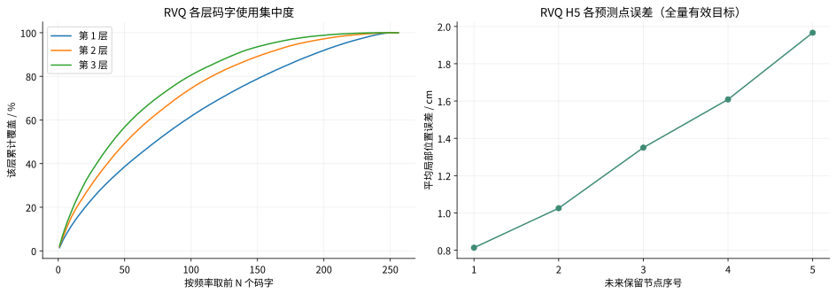
| 未来节点 | 有效目标数 | 位置误差均值 cm | 转角绝对误差均值 ° |
|---|---|---|---|
| 1 | 81,362,028 | 0.36 | 0.19 |
| 2 | 79,421,796 | 2.14 | 0.99 |
| 3 | 77,481,564 | 3.00 | 1.51 |
| 4 | 75,541,332 | 3.56 | 2.13 |
| 5 | 73,601,100 | 5.42 | 3.14 |
各码字的全量次数、占比以及每码的误差累计数据可在下方详细频次表和 统计 JSON 中查看。
局部窗口与真实轨迹案例
下列局部窗口和案例是固定种子 20261118 从 32 个分片抽取的 1,024 条轨迹，不是全量，也不是独立验证集。每个 5/10 边窗口以该窗口真实起点重新对齐，窗口可以重叠；RVQ 每一步只使用 decoded[0]。路程和时长是这些真实节点之间的记录值，节点数不是秒数。
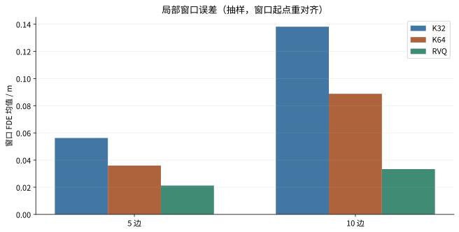
| 分支 | 窗口 | 有效窗口数 | FDE 均值 m | FDE P95 m | 平均路程 m | 平均记录时长 s |
|---|---|---|---|---|---|---|
| K32 | 5 边 | 35,706 | 0.035 | 0.087 | 1.34 | 3.56 |
| K32 | 10 边 | 30,593 | 0.056 | 0.166 | 2.74 | 7.08 |
| K64 | 5 边 | 35,706 | 0.024 | 0.057 | 1.34 | 3.56 |
| K64 | 10 边 | 30,593 | 0.036 | 0.090 | 2.74 | 7.08 |
| RVQ | 5 边 | 35,706 | 0.005 | 0.017 | 1.34 | 3.56 |
| RVQ | 10 边 | 30,593 | 0.007 | 0.027 | 2.74 | 7.08 |
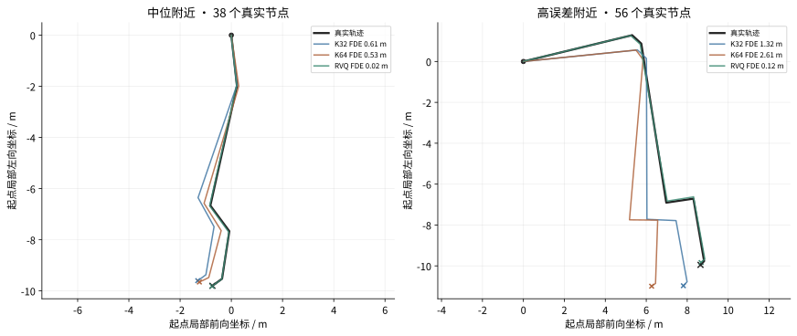
2026-11-20 · K32 重新编码
K32：未来 5 步、10 步的终点误差
保持32个运动码字加STOP=0，每步1个运动token；13个近直行码字的前进间距至少5cm。 两个步长使用同一条离线编码序列；联合拟合与序列搜索以短窗口的SE(2)终点位置误差为主，整轨迹FDE、每步ADE作为辅助诊断。
覆盖全部 1,940,232 条保留轨迹的有效重叠窗口。步数指保留节点之间的运动边，不是视频帧数或秒数；不足5/10步的尾部窗口不计入，不使用STOP填充。窗口仅在真实起点对齐，中间没有GT位姿纠正。
| 窗口 | 版本 | 全量窗口数 | FDE 均值 cm | P50 cm | P95 cm | P99 cm |
|---|---|---|---|---|---|---|
| 5 步 | 调整前 | 73,601,100 | 5.62 | 4.37 | 14.59 | 26.82 |
| 5 步 | 窗口 FDE 版 | 73,601,100 | 3.44 | 2.78 | 8.48 | 14.57 |
| 10 步 | 调整前 | 63,906,363 | 14.04 | 10.53 | 38.79 | 64.75 |
| 10 步 | 窗口 FDE 版 | 63,906,363 | 5.35 | 3.66 | 15.48 | 31.27 |
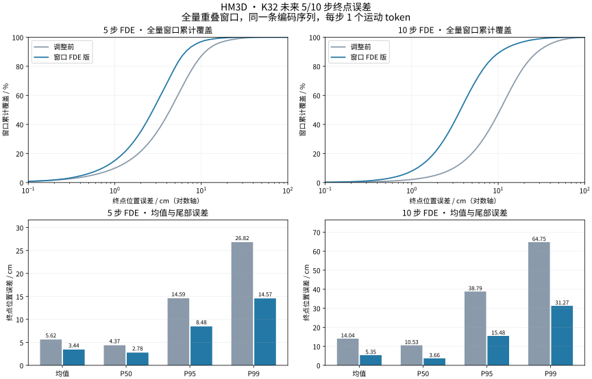
| 窗口 | 版本 | FDE ≤1cm | ≤2cm | ≤5cm | ≤10cm |
|---|---|---|---|---|---|
| 5 步 | 调整前 | 9.9% | 21.5% | 56.5% | 87.1% |
| 5 步 | 窗口 FDE 版 | 15.1% | 35.1% | 79.5% | 97.0% |
| 10 步 | 调整前 | 2.1% | 5.4% | 20.1% | 47.4% |
| 10 步 | 窗口 FDE 版 | 7.9% | 23.2% | 65.6% | 89.0% |
分别检查直行与转弯
| 窗口 | 真实累计绝对转角 | 窗口数 | 均值 cm：前 → 后 | P95 cm：前 → 后 |
|---|---|---|---|---|
| 5 步 | 累计转角 <3° | 18,070,556 | 3.58 → 3.13 | 8.90 → 7.91 |
| 5 步 | 累计转角 3–10° | 5,574,548 | 6.82 → 4.40 | 17.29 → 13.66 |
| 5 步 | 累计转角 ≥10° | 49,955,996 | 6.22 → 3.45 | 16.13 → 8.24 |
| 10 步 | 累计转角 <3° | 3,529,464 | 6.10 → 3.81 | 15.92 → 9.80 |
| 10 步 | 累计转角 3–10° | 2,276,423 | 13.42 → 7.13 | 36.90 → 26.78 |
| 10 步 | 累计转角 ≥10° | 58,100,476 | 14.55 → 5.38 | 39.73 → 15.41 |
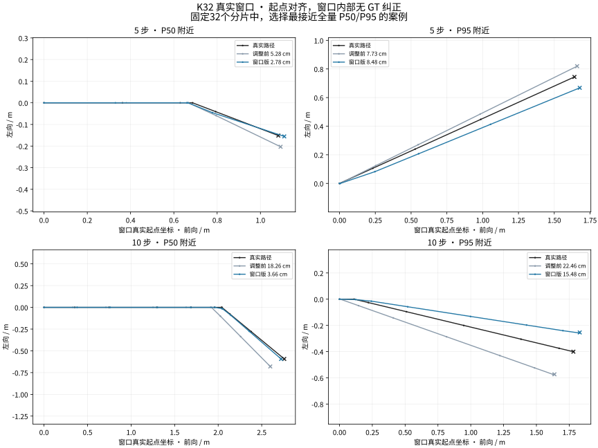
完整码本可视化、逐码字全量使用频率、RVQ三层使用集中度及H5五个预测点误差见下方。初始化码本已见过全量数据；本次两来源各8,192条轨迹微调、各4,096条不重叠轨迹选型，不能据此推断全新场景泛化。
这些数值是GT未来路径经过码本和离线标签重建后的误差，不是模型预测或机器人执行误差。标签不是逐步最近码字；重编码须使用正式入口的 k32/encoder/ 参数及源码。RVQ直接使用当前码本和GT确定性初始化，不依赖历史码本或历史标签。
2026-11-20 · RVQ 重新编码
RVQ：未来 5 步、10 步的终点误差
保持3个残差层、每层256个选项，每步3个运动token，三层相加解码为未来5个局部目标。以连续执行每次解码首点的5/10步FDE为主要目标，微调码本的首点分量，其他未来分量固定；联合选择残差组合，并检查所有有效预测相邻点的最小动作和候选局部误差。 两个步长使用同一条离线编码序列；联合拟合与序列搜索以短窗口的SE(2)终点位置误差为主，整轨迹FDE、每步ADE作为辅助诊断。
覆盖全部 1,940,232 条保留轨迹的有效重叠窗口。步数指保留节点之间的运动边，不是视频帧数或秒数；不足5/10步的尾部窗口不计入，不使用STOP填充。窗口仅在真实起点对齐，中间没有GT位姿纠正。
| 窗口 | 版本 | 全量窗口数 | FDE 均值 cm | P50 cm | P95 cm | P99 cm |
|---|---|---|---|---|---|---|
| 5 步 | 调整前 | 73,601,100 | 2.17 | 1.70 | 5.72 | 8.58 |
| 5 步 | 窗口 FDE 版 | 73,601,100 | 0.53 | 0.31 | 1.69 | 3.23 |
| 10 步 | 调整前 | 63,906,363 | 3.43 | 2.89 | 8.06 | 11.46 |
| 10 步 | 窗口 FDE 版 | 63,906,363 | 0.75 | 0.37 | 2.62 | 5.83 |
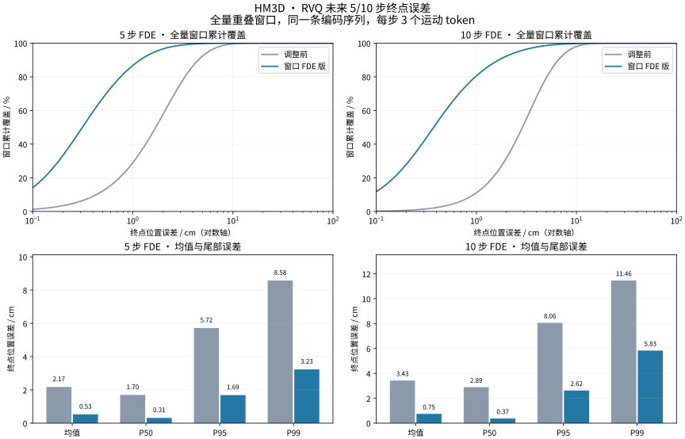
| 窗口 | 版本 | FDE ≤1cm | ≤2cm | ≤5cm | ≤10cm |
|---|---|---|---|---|---|
| 5 步 | 调整前 | 28.9% | 57.6% | 92.5% | 99.5% |
| 5 步 | 窗口 FDE 版 | 86.7% | 96.6% | 99.7% | 100.0% |
| 10 步 | 调整前 | 11.0% | 31.7% | 79.4% | 98.0% |
| 10 步 | 窗口 FDE 版 | 80.5% | 92.3% | 98.6% | 99.7% |
取舍：单次H5预测和连续执行的误差不同
这里的5/10步FDE来自连续执行5/10次各自解码的首点；不是把一次H5输出的第5点直接当成5步执行终点。主要目标改善时，单次输出后几个局部目标的精度可能下降。若后续使用完整5点而非只执行首点，必须同时参考本表。
| 单次输出未来节点 | 位置误差均值 cm：前 → 后 | 转角误差均值 °：前 → 后 |
|---|---|---|
| 1 | 0.81 → 0.36 | 0.082 → 0.192 |
| 2 | 1.03 → 2.14 | 0.532 → 0.989 |
| 3 | 1.35 → 3.00 | 0.707 → 1.515 |
| 4 | 1.61 → 3.56 | 0.882 → 2.129 |
| 5 | 1.97 → 5.42 | 1.208 → 3.144 |
分别检查直行与转弯
| 窗口 | 真实累计绝对转角 | 窗口数 | 均值 cm：前 → 后 | P95 cm：前 → 后 |
|---|---|---|---|---|
| 5 步 | 累计转角 <3° | 18,070,556 | 2.05 → 0.41 | 5.59 → 1.41 |
| 5 步 | 累计转角 3–10° | 5,574,548 | 2.56 → 0.82 | 6.71 → 2.64 |
| 5 步 | 累计转角 ≥10° | 49,955,996 | 2.18 → 0.54 | 5.64 → 1.65 |
| 10 步 | 累计转角 <3° | 3,529,464 | 3.43 → 0.63 | 9.31 → 2.31 |
| 10 步 | 累计转角 3–10° | 2,276,423 | 4.16 → 1.41 | 9.97 → 5.47 |
| 10 步 | 累计转角 ≥10° | 58,100,476 | 3.40 → 0.73 | 7.90 → 2.52 |
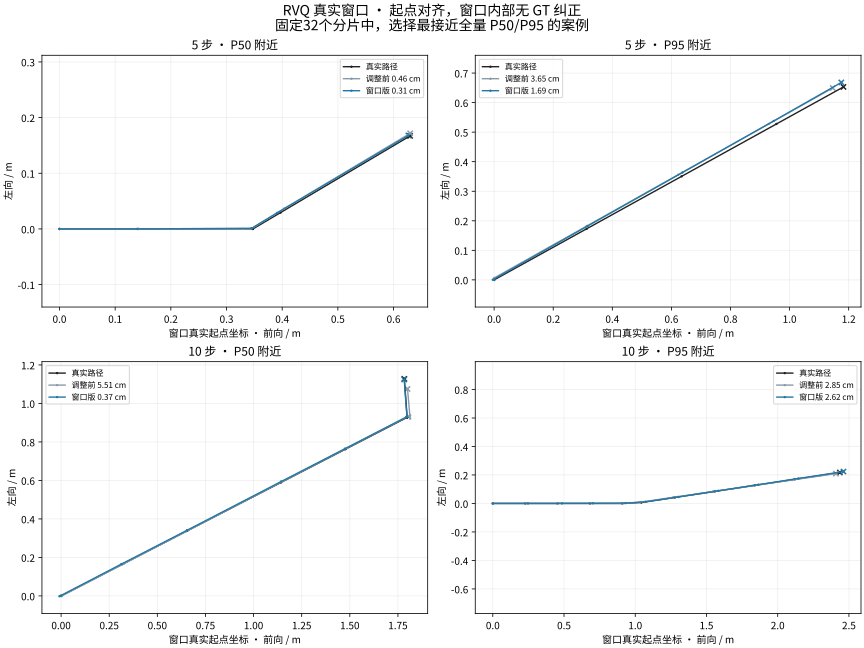
完整码本可视化、逐码字全量使用频率、RVQ三层使用集中度及H5五个预测点误差见下方。初始化码本已见过全量数据；本次两来源各8,192条轨迹微调、各4,096条不重叠轨迹选型，不能据此推断全新场景泛化。
这些数值是GT未来路径经过码本和离线标签重建后的误差，不是模型预测或机器人执行误差。标签不是逐步最近码字；重编码须使用正式入口的 rvq/encoder/ 参数及源码。RVQ直接使用当前码本和GT确定性初始化，不依赖历史码本或历史标签。
2026-11-20 · K64 优化目标更新
主要看未来 5 步、10 步的终点误差
K64 直接针对两个短窗口的 SE(2) 终点位置 FDE 拟合，并联合搜索离线码字序列，让相邻动作的量化误差在窗口内补偿。两个步长始终使用同一条轨迹编码，每个节点只输出一个运动 token；仍为64个运动码字加 STOP=0，解码接口保持一致。近直行16个码字的前进距离间隔仍至少5cm。
覆盖全部 1,940,232 条保留轨迹中的有效重叠窗口。5/10步指5/10条保留节点之间的运动边，不是视频帧数或秒数；未来步数不足的窗口不计入，不以 STOP 填满。每个窗口只在真实起点对齐，内部连续累积解码动作，不使用真实位姿纠正。
| 窗口 | 版本 | 全量窗口数 | FDE 均值 cm | P50 cm | P95 cm | P99 cm |
|---|---|---|---|---|---|---|
| 5 步 | 调整前 | 73,601,100 | 3.94 | 3.15 | 9.80 | 17.23 |
| 5 步 | 窗口 FDE 版 | 73,601,100 | 2.41 | 2.03 | 5.77 | 8.84 |
| 10 步 | 调整前 | 63,906,363 | 8.58 | 6.56 | 22.60 | 42.59 |
| 10 步 | 窗口 FDE 版 | 63,906,363 | 3.56 | 2.75 | 9.15 | 16.98 |
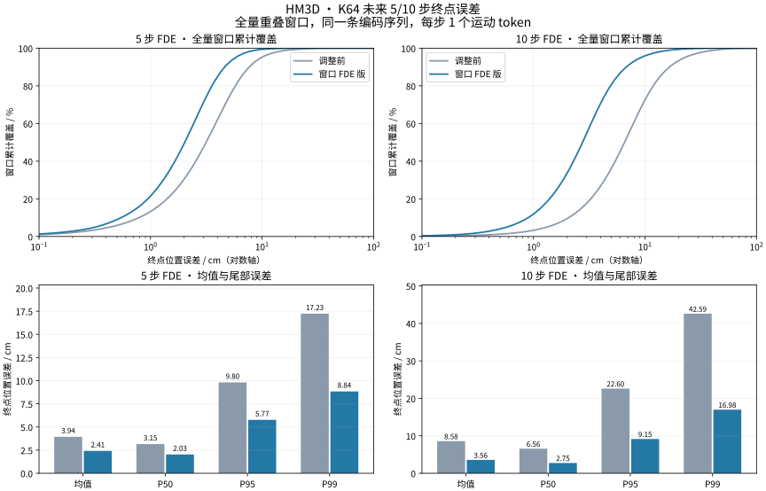
| 窗口 | 版本 | FDE ≤1cm | ≤2cm | ≤5cm | ≤10cm |
|---|---|---|---|---|---|
| 5 步 | 调整前 | 13.3% | 30.4% | 73.5% | 95.3% |
| 5 步 | 窗口 FDE 版 | 21.5% | 49.3% | 92.1% | 99.4% |
| 10 步 | 调整前 | 3.3% | 9.5% | 36.2% | 72.6% |
| 10 步 | 窗口 FDE 版 | 11.9% | 33.6% | 80.8% | 95.9% |
直行与转弯窗口分别看
按真实窗口内累计绝对转角分组，允许约0.00006°的数值容差；同一组的调整前后使用相同窗口。
| 窗口 | 真实累计转角 | 窗口数 | 均值 cm：前 → 后 | P95 cm：前 → 后 |
|---|---|---|---|---|
| 5 步 | 累计转角 <3° | 18,070,556 | 3.00 → 2.08 | 7.30 → 5.43 |
| 5 步 | 累计转角 3–10° | 5,574,548 | 4.99 → 2.70 | 12.61 → 6.71 |
| 5 步 | 累计转角 ≥10° | 49,955,996 | 4.16 → 2.50 | 10.42 → 5.78 |
| 10 步 | 累计转角 <3° | 3,529,464 | 4.83 → 2.48 | 12.36 → 6.10 |
| 10 步 | 累计转角 3–10° | 2,276,423 | 10.56 → 4.06 | 28.50 → 11.36 |
| 10 步 | 累计转角 ≥10° | 58,100,476 | 8.73 → 3.61 | 22.71 → 9.21 |
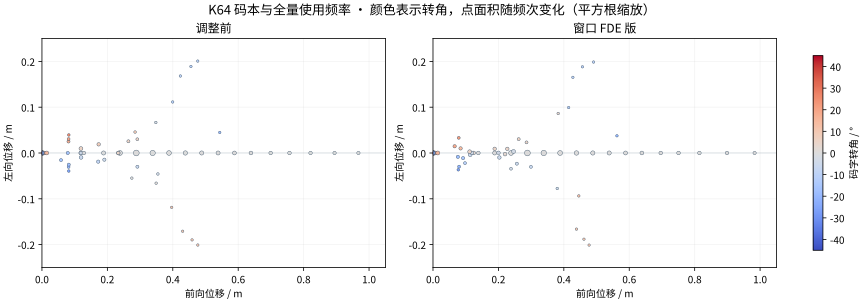
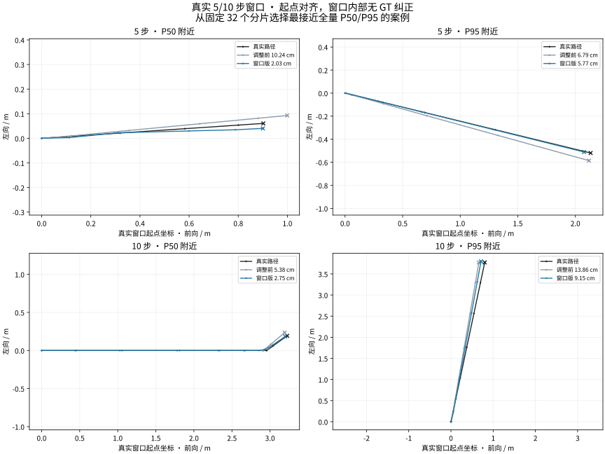
以上衡量真实未来路径经过码本和离线标签重建后的误差；模型预测这些 token 后的机器人执行效果仍需单独验证。码本微调使用两来源各8,192条轨迹，选择模型时使用各4,096条不重叠轨迹；初始化码本此前见过全量数据，因此这些选择集结果不代表全新场景泛化。
整轨迹 FDE、每步位置误差和 ADE 作为下方辅助诊断，不用于本次主要选型。新标签由联合序列搜索生成，不能用单步最近码字重新生成相同标签；离线编码器和配置位于正式入口的 k64/encoder/。
全量轨迹开环重建误差
覆盖本数据集全部 1,940,232 条轨迹、83,302,260 个节点；每条轨迹等权。真实起点开始逐步累积解码动作，中途不以真实位姿纠正；K32/K64（深圳另含 K256）每节点使用宏动作，RVQ 每次使用 decoded[0]。ADE 包含起点的零误差，FDE 为终点位置误差。统计为编码离线重建，不是闭环导航、独立验证集或真机结果。
| 分支 | ADE 均值 m | ADE P50 m | ADE P95 m | FDE 均值 m | FDE P50 m | FDE P95 m | 终点航向误差均值 ° |
|---|---|---|---|---|---|---|---|
| K32 | 0.248 | 0.125 | 0.837 | 0.499 | 0.253 | 1.713 | 5.700 |
| K64 | 0.112 | 0.068 | 0.341 | 0.224 | 0.133 | 0.709 | 3.656 |
| RVQ | 0.033 | 0.016 | 0.112 | 0.066 | 0.032 | 0.231 | 0.801 |
下载全量误差、完整码频及统计口径 JSON。航向误差使用环绕后最短角；累计未环绕航向漂移另见下载文件。
逐码字全量频次明细
展开分支和对应频次表，可查看每个码字的全量使用次数与运动节点占比。STOP 不计入运动码字频率。
K32 · 32 个运动码字与全量使用频率
查看逐码字全量频次表
| ID | 次数 | 运动节点占比 |
|---|---|---|
| 1 | 6,155,672 | 7.566% |
| 2 | 3,831,961 | 4.710% |
| 3 | 2,589,882 | 3.183% |
| 4 | 2,018,760 | 2.481% |
| 5 | 2,811,621 | 3.456% |
| 6 | 2,117,105 | 2.602% |
| 7 | 232,095 | 0.285% |
| 8 | 1,321,101 | 1.624% |
| 9 | 2,763,722 | 3.397% |
| 10 | 4,888,275 | 6.008% |
| 11 | 8,135,852 | 10.000% |
| 12 | 1,479,261 | 1.818% |
| 13 | 969,494 | 1.192% |
| 14 | 1,610,068 | 1.979% |
| 15 | 620,955 | 0.763% |
| 16 | 2,444,776 | 3.005% |
| 17 | 1,050,617 | 1.291% |
| 18 | 1,147,492 | 1.410% |
| 19 | 2,088,310 | 2.567% |
| 20 | 1,009,001 | 1.240% |
| 21 | 1,920,061 | 2.360% |
| 22 | 10,055 | 0.012% |
| 23 | 1,794,749 | 2.206% |
| 24 | 2,179,932 | 2.679% |
| 25 | 567,353 | 0.697% |
| 26 | 9,615 | 0.012% |
| 27 | 2,760,123 | 3.392% |
| 28 | 3,372,078 | 4.145% |
| 29 | 10,612,911 | 13.044% |
| 30 | 1,300,691 | 1.599% |
| 31 | 1,741,141 | 2.140% |
| 32 | 5,807,299 | 7.138% |
K64 · 64 个运动码字与全量使用频率
查看逐码字全量频次表
| ID | 次数 | 运动节点占比 |
|---|---|---|
| 1 | 2,070,993 | 2.545% |
| 2 | 4,939,181 | 6.071% |
| 3 | 769,452 | 0.946% |
| 4 | 157,550 | 0.194% |
| 5 | 239,477 | 0.294% |
| 6 | 1,292,554 | 1.589% |
| 7 | 5,280,527 | 6.490% |
| 8 | 5,626 | 0.007% |
| 9 | 821,263 | 1.009% |
| 10 | 515,834 | 0.634% |
| 11 | 652,137 | 0.802% |
| 12 | 9,281,334 | 11.407% |
| 13 | 294 | 0.000% |
| 14 | 104,252 | 0.128% |
| 15 | 724,781 | 0.891% |
| 16 | 789,223 | 0.970% |
| 17 | 156,609 | 0.192% |
| 18 | 190,320 | 0.234% |
| 19 | 4,862 | 0.006% |
| 20 | 937,913 | 1.153% |
| 21 | 3,174,210 | 3.901% |
| 22 | 1,219,439 | 1.499% |
| 23 | 11,675 | 0.014% |
| 24 | 6,960 | 0.009% |
| 25 | 3,064 | 0.004% |
| 26 | 862,330 | 1.060% |
| 27 | 995,602 | 1.224% |
| 28 | 2,484,335 | 3.053% |
| 29 | 493,070 | 0.606% |
| 30 | 380,032 | 0.467% |
| 31 | 1,524,406 | 1.874% |
| 32 | 1,170,224 | 1.438% |
| 33 | 33,613 | 0.041% |
| 34 | 487,711 | 0.599% |
| 35 | 2,003,856 | 2.463% |
| 36 | 897,571 | 1.103% |
| 37 | 147,771 | 0.182% |
| 38 | 101,385 | 0.125% |
| 39 | 669,581 | 0.823% |
| 40 | 386,524 | 0.475% |
| 41 | 2,953,781 | 3.630% |
| 42 | 2,325 | 0.003% |
| 43 | 1,225,351 | 1.506% |
| 44 | 1,809,352 | 2.224% |
| 45 | 14,954 | 0.018% |
| 46 | 357,002 | 0.439% |
| 47 | 2,640,138 | 3.245% |
| 48 | 1,717,366 | 2.111% |
| 49 | 1,710,583 | 2.102% |
| 50 | 1,666,338 | 2.048% |
| 51 | 406,500 | 0.500% |
| 52 | 875,412 | 1.076% |
| 53 | 169,219 | 0.208% |
| 54 | 1,432 | 0.002% |
| 55 | 690,811 | 0.849% |
| 56 | 12,502,008 | 15.366% |
| 57 | 909 | 0.001% |
| 58 | 1,187,236 | 1.459% |
| 59 | 1,506,392 | 1.851% |
| 60 | 997,814 | 1.226% |
| 61 | 117,657 | 0.145% |
| 62 | 1,165,309 | 1.432% |
| 63 | 639 | 0.001% |
| 64 | 1,655,959 | 2.035% |
RVQ-H5 · 三层码本与全量使用频率
第 1 层：81,362,028 个运动码字
查看逐码字全量频次表
| ID | 次数 | 运动节点占比 |
|---|---|---|
| 0 | 238,517 | 0.293% |
| 1 | 65,349 | 0.080% |
| 2 | 390,100 | 0.479% |
| 3 | 74,966 | 0.092% |
| 4 | 30,821 | 0.038% |
| 5 | 389,805 | 0.479% |
| 6 | 346,742 | 0.426% |
| 7 | 435,895 | 0.536% |
| 8 | 120,020 | 0.148% |
| 9 | 657,409 | 0.808% |
| 10 | 594,864 | 0.731% |
| 11 | 382,881 | 0.471% |
| 12 | 397,754 | 0.489% |
| 13 | 74,823 | 0.092% |
| 14 | 251,062 | 0.309% |
| 15 | 592,931 | 0.729% |
| 16 | 262,576 | 0.323% |
| 17 | 883,302 | 1.086% |
| 18 | 381,827 | 0.469% |
| 19 | 109,365 | 0.134% |
| 20 | 324,679 | 0.399% |
| 21 | 366,695 | 0.451% |
| 22 | 138,752 | 0.171% |
| 23 | 223,830 | 0.275% |
| 24 | 140,592 | 0.173% |
| 25 | 121,520 | 0.149% |
| 26 | 387,137 | 0.476% |
| 27 | 173,170 | 0.213% |
| 28 | 430,910 | 0.530% |
| 29 | 330,603 | 0.406% |
| 30 | 594,390 | 0.731% |
| 31 | 197,445 | 0.243% |
| 32 | 159,929 | 0.197% |
| 33 | 228,860 | 0.281% |
| 34 | 451,490 | 0.555% |
| 35 | 530,479 | 0.652% |
| 36 | 207,391 | 0.255% |
| 37 | 528,137 | 0.649% |
| 38 | 315,654 | 0.388% |
| 39 | 277,432 | 0.341% |
| 40 | 351,051 | 0.431% |
| 41 | 11,706 | 0.014% |
| 42 | 187,995 | 0.231% |
| 43 | 260,617 | 0.320% |
| 44 | 322,397 | 0.396% |
| 45 | 358,073 | 0.440% |
| 46 | 192,983 | 0.237% |
| 47 | 159,922 | 0.197% |
| 48 | 166,623 | 0.205% |
| 49 | 426,633 | 0.524% |
| 50 | 252,490 | 0.310% |
| 51 | 234,453 | 0.288% |
| 52 | 338,065 | 0.416% |
| 53 | 400,347 | 0.492% |
| 54 | 156,222 | 0.192% |
| 55 | 371,501 | 0.457% |
| 56 | 321,796 | 0.396% |
| 57 | 333,490 | 0.410% |
| 58 | 294,562 | 0.362% |
| 59 | 857,709 | 1.054% |
| 60 | 95,953 | 0.118% |
| 61 | 293,025 | 0.360% |
| 62 | 517,484 | 0.636% |
| 63 | 472,727 | 0.581% |
| 64 | 276,623 | 0.340% |
| 65 | 417,442 | 0.513% |
| 66 | 276,486 | 0.340% |
| 67 | 399,958 | 0.492% |
| 68 | 354,631 | 0.436% |
| 69 | 257,439 | 0.316% |
| 70 | 396,950 | 0.488% |
| 71 | 336,895 | 0.414% |
| 72 | 127,822 | 0.157% |
| 73 | 369,401 | 0.454% |
| 74 | 263,295 | 0.324% |
| 75 | 857,767 | 1.054% |
| 76 | 309,341 | 0.380% |
| 77 | 431,660 | 0.531% |
| 78 | 200,344 | 0.246% |
| 79 | 278,231 | 0.342% |
| 80 | 772,384 | 0.949% |
| 81 | 202,116 | 0.248% |
| 82 | 44,027 | 0.054% |
| 83 | 163,041 | 0.200% |
| 84 | 471,243 | 0.579% |
| 85 | 1,060,932 | 1.304% |
| 86 | 322,316 | 0.396% |
| 87 | 243,431 | 0.299% |
| 88 | 107,791 | 0.132% |
| 89 | 632,716 | 0.778% |
| 90 | 172,168 | 0.212% |
| 91 | 178,031 | 0.219% |
| 92 | 225,721 | 0.277% |
| 93 | 227,095 | 0.279% |
| 94 | 356,011 | 0.438% |
| 95 | 329,880 | 0.405% |
| 96 | 188,953 | 0.232% |
| 97 | 697,658 | 0.857% |
| 98 | 404,204 | 0.497% |
| 99 | 155,033 | 0.191% |
| 100 | 134,698 | 0.166% |
| 101 | 101,633 | 0.125% |
| 102 | 237,260 | 0.292% |
| 103 | 190,484 | 0.234% |
| 104 | 141,958 | 0.174% |
| 105 | 147,926 | 0.182% |
| 106 | 175,949 | 0.216% |
| 107 | 138,152 | 0.170% |
| 108 | 727,902 | 0.895% |
| 109 | 258,236 | 0.317% |
| 110 | 355,509 | 0.437% |
| 111 | 916,704 | 1.127% |
| 112 | 227,044 | 0.279% |
| 113 | 388,186 | 0.477% |
| 114 | 236,919 | 0.291% |
| 115 | 114,162 | 0.140% |
| 116 | 213,704 | 0.263% |
| 117 | 121,312 | 0.149% |
| 118 | 6,799 | 0.008% |
| 119 | 264,776 | 0.325% |
| 120 | 611,870 | 0.752% |
| 121 | 211,304 | 0.260% |
| 122 | 8,130 | 0.010% |
| 123 | 349,458 | 0.430% |
| 124 | 272,778 | 0.335% |
| 125 | 121,779 | 0.150% |
| 126 | 780,749 | 0.960% |
| 127 | 808,662 | 0.994% |
| 128 | 251,939 | 0.310% |
| 129 | 256,302 | 0.315% |
| 130 | 126,840 | 0.156% |
| 131 | 270,739 | 0.333% |
| 132 | 3,925 | 0.005% |
| 133 | 629,653 | 0.774% |
| 134 | 192,457 | 0.237% |
| 135 | 132,391 | 0.163% |
| 136 | 226,817 | 0.279% |
| 137 | 562,963 | 0.692% |
| 138 | 270,199 | 0.332% |
| 139 | 398,471 | 0.490% |
| 140 | 445,224 | 0.547% |
| 141 | 296,303 | 0.364% |
| 142 | 198,726 | 0.244% |
| 143 | 320,375 | 0.394% |
| 144 | 416,174 | 0.512% |
| 145 | 493,243 | 0.606% |
| 146 | 272,562 | 0.335% |
| 147 | 208,184 | 0.256% |
| 148 | 183,195 | 0.225% |
| 149 | 245,439 | 0.302% |
| 150 | 249,309 | 0.306% |
| 151 | 316,246 | 0.389% |
| 152 | 285,487 | 0.351% |
| 153 | 39,342 | 0.048% |
| 154 | 463,062 | 0.569% |
| 155 | 409,113 | 0.503% |
| 156 | 266,106 | 0.327% |
| 157 | 626,766 | 0.770% |
| 158 | 472,232 | 0.580% |
| 159 | 406,991 | 0.500% |
| 160 | 207,211 | 0.255% |
| 161 | 11,760 | 0.014% |
| 162 | 158,307 | 0.195% |
| 163 | 822,768 | 1.011% |
| 164 | 230,505 | 0.283% |
| 165 | 179,152 | 0.220% |
| 166 | 644,187 | 0.792% |
| 167 | 270,786 | 0.333% |
| 168 | 211,480 | 0.260% |
| 169 | 155,794 | 0.191% |
| 170 | 190,199 | 0.234% |
| 171 | 568,631 | 0.699% |
| 172 | 182,721 | 0.225% |
| 173 | 662,100 | 0.814% |
| 174 | 80,689 | 0.099% |
| 175 | 141,288 | 0.174% |
| 176 | 262,965 | 0.323% |
| 177 | 474,369 | 0.583% |
| 178 | 229,410 | 0.282% |
| 179 | 326,433 | 0.401% |
| 180 | 219,351 | 0.270% |
| 181 | 105,640 | 0.130% |
| 182 | 305,413 | 0.375% |
| 183 | 216,122 | 0.266% |
| 184 | 279,673 | 0.344% |
| 185 | 125,866 | 0.155% |
| 186 | 291,558 | 0.358% |
| 187 | 198,528 | 0.244% |
| 188 | 246,450 | 0.303% |
| 189 | 130,638 | 0.161% |
| 190 | 187,962 | 0.231% |
| 191 | 373,418 | 0.459% |
| 192 | 321,230 | 0.395% |
| 193 | 333,381 | 0.410% |
| 194 | 346,998 | 0.426% |
| 195 | 269,777 | 0.332% |
| 196 | 155,619 | 0.191% |
| 197 | 269,831 | 0.332% |
| 198 | 213,275 | 0.262% |
| 199 | 472,590 | 0.581% |
| 200 | 637,901 | 0.784% |
| 201 | 1,990 | 0.002% |
| 202 | 315,749 | 0.388% |
| 203 | 463,705 | 0.570% |
| 204 | 553,138 | 0.680% |
| 205 | 354,543 | 0.436% |
| 206 | 189,423 | 0.233% |
| 207 | 401,276 | 0.493% |
| 208 | 495,101 | 0.609% |
| 209 | 475,145 | 0.584% |
| 210 | 424,462 | 0.522% |
| 211 | 341,105 | 0.419% |
| 212 | 187,992 | 0.231% |
| 213 | 123,065 | 0.151% |
| 214 | 189,639 | 0.233% |
| 215 | 394,941 | 0.485% |
| 216 | 489,240 | 0.601% |
| 217 | 1,009,484 | 1.241% |
| 218 | 224,213 | 0.276% |
| 219 | 431,716 | 0.531% |
| 220 | 145,709 | 0.179% |
| 221 | 138,797 | 0.171% |
| 222 | 381,475 | 0.469% |
| 223 | 368,215 | 0.453% |
| 224 | 440,126 | 0.541% |
| 225 | 289,391 | 0.356% |
| 226 | 465,059 | 0.572% |
| 227 | 195,476 | 0.240% |
| 228 | 219,056 | 0.269% |
| 229 | 605,888 | 0.745% |
| 230 | 767,626 | 0.943% |
| 231 | 586,494 | 0.721% |
| 232 | 275,704 | 0.339% |
| 233 | 226,595 | 0.279% |
| 234 | 222,288 | 0.273% |
| 235 | 249,196 | 0.306% |
| 236 | 246,243 | 0.303% |
| 237 | 411,891 | 0.506% |
| 238 | 121,871 | 0.150% |
| 239 | 344,708 | 0.424% |
| 240 | 227,076 | 0.279% |
| 241 | 125,869 | 0.155% |
| 242 | 177,727 | 0.218% |
| 243 | 289,907 | 0.356% |
| 244 | 226,275 | 0.278% |
| 245 | 288,132 | 0.354% |
| 246 | 111,307 | 0.137% |
| 247 | 448,955 | 0.552% |
| 248 | 229,764 | 0.282% |
| 249 | 176,180 | 0.217% |
| 250 | 222,112 | 0.273% |
| 251 | 287,856 | 0.354% |
| 252 | 338,385 | 0.416% |
| 253 | 677,726 | 0.833% |
| 254 | 387,819 | 0.477% |
| 255 | 769,445 | 0.946% |
第 2 层：81,362,028 个运动码字
查看逐码字全量频次表
| ID | 次数 | 运动节点占比 |
|---|---|---|
| 0 | 153,085 | 0.188% |
| 1 | 41,242 | 0.051% |
| 2 | 260,478 | 0.320% |
| 3 | 124,117 | 0.153% |
| 4 | 323,575 | 0.398% |
| 5 | 71,618 | 0.088% |
| 6 | 301,896 | 0.371% |
| 7 | 376,978 | 0.463% |
| 8 | 56,829 | 0.070% |
| 9 | 66,912 | 0.082% |
| 10 | 754,382 | 0.927% |
| 11 | 285,231 | 0.351% |
| 12 | 117,709 | 0.145% |
| 13 | 303,301 | 0.373% |
| 14 | 18,713 | 0.023% |
| 15 | 209,302 | 0.257% |
| 16 | 210,217 | 0.258% |
| 17 | 123,889 | 0.152% |
| 18 | 22,319 | 0.027% |
| 19 | 257,814 | 0.317% |
| 20 | 208,917 | 0.257% |
| 21 | 476,949 | 0.586% |
| 22 | 120,028 | 0.148% |
| 23 | 461,992 | 0.568% |
| 24 | 929,799 | 1.143% |
| 25 | 5,077 | 0.006% |
| 26 | 367,735 | 0.452% |
| 27 | 193,405 | 0.238% |
| 28 | 348,998 | 0.429% |
| 29 | 55,049 | 0.068% |
| 30 | 11,714 | 0.014% |
| 31 | 123,700 | 0.152% |
| 32 | 618,713 | 0.760% |
| 33 | 796,785 | 0.979% |
| 34 | 1,009,016 | 1.240% |
| 35 | 603,927 | 0.742% |
| 36 | 473,256 | 0.582% |
| 37 | 485,270 | 0.596% |
| 38 | 400,084 | 0.492% |
| 39 | 539,311 | 0.663% |
| 40 | 374,306 | 0.460% |
| 41 | 78,557 | 0.097% |
| 42 | 30,993 | 0.038% |
| 43 | 1,050,491 | 1.291% |
| 44 | 128,979 | 0.159% |
| 45 | 90,379 | 0.111% |
| 46 | 444,780 | 0.547% |
| 47 | 9,991 | 0.012% |
| 48 | 136,157 | 0.167% |
| 49 | 792,816 | 0.974% |
| 50 | 54,423 | 0.067% |
| 51 | 355,013 | 0.436% |
| 52 | 400,547 | 0.492% |
| 53 | 283,793 | 0.349% |
| 54 | 328,658 | 0.404% |
| 55 | 51,486 | 0.063% |
| 56 | 674,285 | 0.829% |
| 57 | 465,724 | 0.572% |
| 58 | 261,246 | 0.321% |
| 59 | 653,906 | 0.804% |
| 60 | 319,290 | 0.392% |
| 61 | 179,120 | 0.220% |
| 62 | 295,374 | 0.363% |
| 63 | 144,695 | 0.178% |
| 64 | 271,848 | 0.334% |
| 65 | 57,283 | 0.070% |
| 66 | 260,019 | 0.320% |
| 67 | 171,064 | 0.210% |
| 68 | 793,229 | 0.975% |
| 69 | 794,559 | 0.977% |
| 70 | 148,424 | 0.182% |
| 71 | 1,144,499 | 1.407% |
| 72 | 749,369 | 0.921% |
| 73 | 102,061 | 0.125% |
| 74 | 298,190 | 0.366% |
| 75 | 344,749 | 0.424% |
| 76 | 540,416 | 0.664% |
| 77 | 617,666 | 0.759% |
| 78 | 430,069 | 0.529% |
| 79 | 111,367 | 0.137% |
| 80 | 99,611 | 0.122% |
| 81 | 596,076 | 0.733% |
| 82 | 747,878 | 0.919% |
| 83 | 8,645 | 0.011% |
| 84 | 101,685 | 0.125% |
| 85 | 756,359 | 0.930% |
| 86 | 248,454 | 0.305% |
| 87 | 329,464 | 0.405% |
| 88 | 97,528 | 0.120% |
| 89 | 332,587 | 0.409% |
| 90 | 448,745 | 0.552% |
| 91 | 244,278 | 0.300% |
| 92 | 550,895 | 0.677% |
| 93 | 66,003 | 0.081% |
| 94 | 1,442,095 | 1.772% |
| 95 | 390,324 | 0.480% |
| 96 | 212,785 | 0.262% |
| 97 | 358,248 | 0.440% |
| 98 | 601,676 | 0.740% |
| 99 | 476,584 | 0.586% |
| 100 | 618,655 | 0.760% |
| 101 | 863,332 | 1.061% |
| 102 | 606,973 | 0.746% |
| 103 | 593,112 | 0.729% |
| 104 | 568,960 | 0.699% |
| 105 | 70,138 | 0.086% |
| 106 | 180,406 | 0.222% |
| 107 | 328,595 | 0.404% |
| 108 | 241,242 | 0.297% |
| 109 | 37,228 | 0.046% |
| 110 | 35,036 | 0.043% |
| 111 | 1,181,682 | 1.452% |
| 112 | 460,092 | 0.565% |
| 113 | 234,946 | 0.289% |
| 114 | 90,065 | 0.111% |
| 115 | 122,965 | 0.151% |
| 116 | 524,538 | 0.645% |
| 117 | 12,839 | 0.016% |
| 118 | 871,280 | 1.071% |
| 119 | 305,901 | 0.376% |
| 120 | 363,496 | 0.447% |
| 121 | 376,946 | 0.463% |
| 122 | 607,675 | 0.747% |
| 123 | 14,216 | 0.017% |
| 124 | 9,176 | 0.011% |
| 125 | 50,265 | 0.062% |
| 126 | 81,459 | 0.100% |
| 127 | 533,530 | 0.656% |
| 128 | 644,655 | 0.792% |
| 129 | 1,055,430 | 1.297% |
| 130 | 297,803 | 0.366% |
| 131 | 151,062 | 0.186% |
| 132 | 407,160 | 0.500% |
| 133 | 298,118 | 0.366% |
| 134 | 342,691 | 0.421% |
| 135 | 62,652 | 0.077% |
| 136 | 680,268 | 0.836% |
| 137 | 67,608 | 0.083% |
| 138 | 200,139 | 0.246% |
| 139 | 4,575 | 0.006% |
| 140 | 33,465 | 0.041% |
| 141 | 120,726 | 0.148% |
| 142 | 1,143,540 | 1.405% |
| 143 | 568,581 | 0.699% |
| 144 | 329,989 | 0.406% |
| 145 | 228,642 | 0.281% |
| 146 | 18,270 | 0.022% |
| 147 | 234,775 | 0.289% |
| 148 | 269,082 | 0.331% |
| 149 | 155,170 | 0.191% |
| 150 | 476,572 | 0.586% |
| 151 | 68,387 | 0.084% |
| 152 | 194,115 | 0.239% |
| 153 | 242,218 | 0.298% |
| 154 | 702,298 | 0.863% |
| 155 | 300,811 | 0.370% |
| 156 | 324,539 | 0.399% |
| 157 | 456,752 | 0.561% |
| 158 | 239,166 | 0.294% |
| 159 | 54,681 | 0.067% |
| 160 | 183,463 | 0.225% |
| 161 | 151,276 | 0.186% |
| 162 | 270,223 | 0.332% |
| 163 | 294,371 | 0.362% |
| 164 | 142,131 | 0.175% |
| 165 | 106,906 | 0.131% |
| 166 | 60,727 | 0.075% |
| 167 | 260,347 | 0.320% |
| 168 | 104,000 | 0.128% |
| 169 | 184,670 | 0.227% |
| 170 | 1,078,545 | 1.326% |
| 171 | 379,558 | 0.467% |
| 172 | 370,902 | 0.456% |
| 173 | 102,138 | 0.126% |
| 174 | 283,091 | 0.348% |
| 175 | 432,009 | 0.531% |
| 176 | 4,299 | 0.005% |
| 177 | 32,522 | 0.040% |
| 178 | 596,628 | 0.733% |
| 179 | 286,261 | 0.352% |
| 180 | 263,619 | 0.324% |
| 181 | 263,543 | 0.324% |
| 182 | 407,328 | 0.501% |
| 183 | 131,903 | 0.162% |
| 184 | 221,704 | 0.272% |
| 185 | 33,917 | 0.042% |
| 186 | 6,789 | 0.008% |
| 187 | 285,272 | 0.351% |
| 188 | 353,605 | 0.435% |
| 189 | 33,481 | 0.041% |
| 190 | 5,686 | 0.007% |
| 191 | 309,348 | 0.380% |
| 192 | 97,821 | 0.120% |
| 193 | 369,083 | 0.454% |
| 194 | 294,240 | 0.362% |
| 195 | 220,062 | 0.270% |
| 196 | 127,543 | 0.157% |
| 197 | 301,971 | 0.371% |
| 198 | 10,466 | 0.013% |
| 199 | 1,118,154 | 1.374% |
| 200 | 545,682 | 0.671% |
| 201 | 26,185 | 0.032% |
| 202 | 58,057 | 0.071% |
| 203 | 149,786 | 0.184% |
| 204 | 20,938 | 0.026% |
| 205 | 382,437 | 0.470% |
| 206 | 44,230 | 0.054% |
| 207 | 48,284 | 0.059% |
| 208 | 101,928 | 0.125% |
| 209 | 220,674 | 0.271% |
| 210 | 60,238 | 0.074% |
| 211 | 50,433 | 0.062% |
| 212 | 815,298 | 1.002% |
| 213 | 579,297 | 0.712% |
| 214 | 624,534 | 0.768% |
| 215 | 320,751 | 0.394% |
| 216 | 209,419 | 0.257% |
| 217 | 288,463 | 0.355% |
| 218 | 796,417 | 0.979% |
| 219 | 144,498 | 0.178% |
| 220 | 186,143 | 0.229% |
| 221 | 39,268 | 0.048% |
| 222 | 156,147 | 0.192% |
| 223 | 251,255 | 0.309% |
| 224 | 107,311 | 0.132% |
| 225 | 127,498 | 0.157% |
| 226 | 748,110 | 0.919% |
| 227 | 777,885 | 0.956% |
| 228 | 335,808 | 0.413% |
| 229 | 64,330 | 0.079% |
| 230 | 83,304 | 0.102% |
| 231 | 310,715 | 0.382% |
| 232 | 237,766 | 0.292% |
| 233 | 539,365 | 0.663% |
| 234 | 12,699 | 0.016% |
| 235 | 642,890 | 0.790% |
| 236 | 476 | 0.001% |
| 237 | 208,764 | 0.257% |
| 238 | 356,533 | 0.438% |
| 239 | 636,052 | 0.782% |
| 240 | 289,534 | 0.356% |
| 241 | 217,668 | 0.268% |
| 242 | 49,222 | 0.060% |
| 243 | 180,998 | 0.222% |
| 244 | 262,574 | 0.323% |
| 245 | 50,252 | 0.062% |
| 246 | 525,458 | 0.646% |
| 247 | 175,541 | 0.216% |
| 248 | 908,127 | 1.116% |
| 249 | 346,333 | 0.426% |
| 250 | 896,607 | 1.102% |
| 251 | 219,175 | 0.269% |
| 252 | 162,208 | 0.199% |
| 253 | 124,717 | 0.153% |
| 254 | 7,707 | 0.009% |
| 255 | 238,676 | 0.293% |
第 3 层：81,362,028 个运动码字
查看逐码字全量频次表
| ID | 次数 | 运动节点占比 |
|---|---|---|
| 0 | 78,484 | 0.096% |
| 1 | 720,032 | 0.885% |
| 2 | 4,663 | 0.006% |
| 3 | 319,374 | 0.393% |
| 4 | 717,727 | 0.882% |
| 5 | 352,968 | 0.434% |
| 6 | 681,321 | 0.837% |
| 7 | 1,016,160 | 1.249% |
| 8 | 1,196,810 | 1.471% |
| 9 | 97 | 0.000% |
| 10 | 162,824 | 0.200% |
| 11 | 621,274 | 0.764% |
| 12 | 65,887 | 0.081% |
| 13 | 468,275 | 0.576% |
| 14 | 4 | 0.000% |
| 15 | 42,584 | 0.052% |
| 16 | 350,634 | 0.431% |
| 17 | 3,737 | 0.005% |
| 18 | 570,682 | 0.701% |
| 19 | 225,520 | 0.277% |
| 20 | 862,924 | 1.061% |
| 21 | 1,032,322 | 1.269% |
| 22 | 111,795 | 0.137% |
| 23 | 90,827 | 0.112% |
| 24 | 202,493 | 0.249% |
| 25 | 2,876 | 0.004% |
| 26 | 73,450 | 0.090% |
| 27 | 55,052 | 0.068% |
| 28 | 89,032 | 0.109% |
| 29 | 75,124 | 0.092% |
| 30 | 136,600 | 0.168% |
| 31 | 42,339 | 0.052% |
| 32 | 186,131 | 0.229% |
| 33 | 848,956 | 1.043% |
| 34 | 125,730 | 0.155% |
| 35 | 1,126,615 | 1.385% |
| 36 | 715,409 | 0.879% |
| 37 | 325,021 | 0.399% |
| 38 | 18,694 | 0.023% |
| 39 | 873,118 | 1.073% |
| 40 | 67,640 | 0.083% |
| 41 | 29,224 | 0.036% |
| 42 | 152,760 | 0.188% |
| 43 | 333,045 | 0.409% |
| 44 | 590,789 | 0.726% |
| 45 | 315 | 0.000% |
| 46 | 78,565 | 0.097% |
| 47 | 44,081 | 0.054% |
| 48 | 118,901 | 0.146% |
| 49 | 13,683 | 0.017% |
| 50 | 188,679 | 0.232% |
| 51 | 879 | 0.001% |
| 52 | 144,900 | 0.178% |
| 53 | 640,032 | 0.787% |
| 54 | 208,387 | 0.256% |
| 55 | 498,738 | 0.613% |
| 56 | 372,009 | 0.457% |
| 57 | 142,510 | 0.175% |
| 58 | 845,045 | 1.039% |
| 59 | 295,399 | 0.363% |
| 60 | 19,160 | 0.024% |
| 61 | 44,453 | 0.055% |
| 62 | 1,350,913 | 1.660% |
| 63 | 82,592 | 0.102% |
| 64 | 169,567 | 0.208% |
| 65 | 337,014 | 0.414% |
| 66 | 699,231 | 0.859% |
| 67 | 660,909 | 0.812% |
| 68 | 46,538 | 0.057% |
| 69 | 32,216 | 0.040% |
| 70 | 217,868 | 0.268% |
| 71 | 56,143 | 0.069% |
| 72 | 1,178,471 | 1.448% |
| 73 | 135,500 | 0.167% |
| 74 | 334,671 | 0.411% |
| 75 | 25,166 | 0.031% |
| 76 | 537,857 | 0.661% |
| 77 | 316,985 | 0.390% |
| 78 | 339,165 | 0.417% |
| 79 | 414,542 | 0.510% |
| 80 | 364,084 | 0.447% |
| 81 | 68,453 | 0.084% |
| 82 | 331,250 | 0.407% |
| 83 | 105,396 | 0.130% |
| 84 | 224,824 | 0.276% |
| 85 | 291,374 | 0.358% |
| 86 | 376,835 | 0.463% |
| 87 | 81 | 0.000% |
| 88 | 350,593 | 0.431% |
| 89 | 406,839 | 0.500% |
| 90 | 190,147 | 0.234% |
| 91 | 47,488 | 0.058% |
| 92 | 566,108 | 0.696% |
| 93 | 85,449 | 0.105% |
| 94 | 381,660 | 0.469% |
| 95 | 186,114 | 0.229% |
| 96 | 97,840 | 0.120% |
| 97 | 337,684 | 0.415% |
| 98 | 330,268 | 0.406% |
| 99 | 240,152 | 0.295% |
| 100 | 397,823 | 0.489% |
| 101 | 397,966 | 0.489% |
| 102 | 6,525 | 0.008% |
| 103 | 5,901 | 0.007% |
| 104 | 491,557 | 0.604% |
| 105 | 734,907 | 0.903% |
| 106 | 299,210 | 0.368% |
| 107 | 59,856 | 0.074% |
| 108 | 394,100 | 0.484% |
| 109 | 76,318 | 0.094% |
| 110 | 457,875 | 0.563% |
| 111 | 11,102 | 0.014% |
| 112 | 143,043 | 0.176% |
| 113 | 543,987 | 0.669% |
| 114 | 15,363 | 0.019% |
| 115 | 7,085 | 0.009% |
| 116 | 756,158 | 0.929% |
| 117 | 384,034 | 0.472% |
| 118 | 281,561 | 0.346% |
| 119 | 76,747 | 0.094% |
| 120 | 24,236 | 0.030% |
| 121 | 57,836 | 0.071% |
| 122 | 58,794 | 0.072% |
| 123 | 10,395 | 0.013% |
| 124 | 168,589 | 0.207% |
| 125 | 1,156,146 | 1.421% |
| 126 | 10,576 | 0.013% |
| 127 | 638,956 | 0.785% |
| 128 | 137,584 | 0.169% |
| 129 | 586,928 | 0.721% |
| 130 | 140,288 | 0.172% |
| 131 | 473,474 | 0.582% |
| 132 | 1,215,782 | 1.494% |
| 133 | 321,024 | 0.395% |
| 134 | 339,667 | 0.417% |
| 135 | 228,024 | 0.280% |
| 136 | 204,791 | 0.252% |
| 137 | 10,201 | 0.013% |
| 138 | 44,256 | 0.054% |
| 139 | 243,944 | 0.300% |
| 140 | 119,388 | 0.147% |
| 141 | 107,585 | 0.132% |
| 142 | 363,306 | 0.447% |
| 143 | 690,727 | 0.849% |
| 144 | 427,536 | 0.525% |
| 145 | 67 | 0.000% |
| 146 | 51,401 | 0.063% |
| 147 | 129,415 | 0.159% |
| 148 | 110,539 | 0.136% |
| 149 | 101,985 | 0.125% |
| 150 | 246,820 | 0.303% |
| 151 | 576,760 | 0.709% |
| 152 | 265,335 | 0.326% |
| 153 | 28,074 | 0.035% |
| 154 | 428,647 | 0.527% |
| 155 | 137,756 | 0.169% |
| 156 | 1,267,181 | 1.557% |
| 157 | 77,220 | 0.095% |
| 158 | 35,353 | 0.043% |
| 159 | 135,273 | 0.166% |
| 160 | 945,665 | 1.162% |
| 161 | 139,627 | 0.172% |
| 162 | 146,620 | 0.180% |
| 163 | 254,329 | 0.313% |
| 164 | 240,176 | 0.295% |
| 165 | 165,219 | 0.203% |
| 166 | 775,382 | 0.953% |
| 167 | 342,458 | 0.421% |
| 168 | 417,867 | 0.514% |
| 169 | 973,464 | 1.196% |
| 170 | 334,422 | 0.411% |
| 171 | 128,100 | 0.157% |
| 172 | 83,365 | 0.102% |
| 173 | 52,717 | 0.065% |
| 174 | 338,705 | 0.416% |
| 175 | 39,166 | 0.048% |
| 176 | 234,289 | 0.288% |
| 177 | 813,549 | 1.000% |
| 178 | 400,638 | 0.492% |
| 179 | 20,269 | 0.025% |
| 180 | 1,184,009 | 1.455% |
| 181 | 229,676 | 0.282% |
| 182 | 115,742 | 0.142% |
| 183 | 207,620 | 0.255% |
| 184 | 374,560 | 0.460% |
| 185 | 61,019 | 0.075% |
| 186 | 230,977 | 0.284% |
| 187 | 1,235,846 | 1.519% |
| 188 | 19,836 | 0.024% |
| 189 | 1,265,277 | 1.555% |
| 190 | 830,016 | 1.020% |
| 191 | 300,921 | 0.370% |
| 192 | 69,758 | 0.086% |
| 193 | 2,754 | 0.003% |
| 194 | 306,890 | 0.377% |
| 195 | 25,800 | 0.032% |
| 196 | 701,600 | 0.862% |
| 197 | 63,683 | 0.078% |
| 198 | 53,397 | 0.066% |
| 199 | 216,491 | 0.266% |
| 200 | 808,541 | 0.994% |
| 201 | 935,681 | 1.150% |
| 202 | 363 | 0.000% |
| 203 | 300,167 | 0.369% |
| 204 | 217,931 | 0.268% |
| 205 | 926,652 | 1.139% |
| 206 | 165,795 | 0.204% |
| 207 | 35,366 | 0.043% |
| 208 | 1,380,858 | 1.697% |
| 209 | 361,724 | 0.445% |
| 210 | 369,579 | 0.454% |
| 211 | 43,945 | 0.054% |
| 212 | 148,975 | 0.183% |
| 213 | 654,087 | 0.804% |
| 214 | 614,985 | 0.756% |
| 215 | 307,060 | 0.377% |
| 216 | 512,565 | 0.630% |
| 217 | 156 | 0.000% |
| 218 | 1,369,293 | 1.683% |
| 219 | 160,332 | 0.197% |
| 220 | 248,616 | 0.306% |
| 221 | 14,318 | 0.018% |
| 222 | 91,517 | 0.112% |
| 223 | 54,451 | 0.067% |
| 224 | 213,662 | 0.263% |
| 225 | 270,748 | 0.333% |
| 226 | 343,476 | 0.422% |
| 227 | 329,586 | 0.405% |
| 228 | 103,916 | 0.128% |
| 229 | 417,928 | 0.514% |
| 230 | 556,880 | 0.684% |
| 231 | 213,136 | 0.262% |
| 232 | 116,887 | 0.144% |
| 233 | 49,789 | 0.061% |
| 234 | 704 | 0.001% |
| 235 | 136,775 | 0.168% |
| 236 | 49,439 | 0.061% |
| 237 | 398,269 | 0.490% |
| 238 | 10,015 | 0.012% |
| 239 | 378,974 | 0.466% |
| 240 | 611,015 | 0.751% |
| 241 | 645,841 | 0.794% |
| 242 | 275,120 | 0.338% |
| 243 | 11,649 | 0.014% |
| 244 | 171,477 | 0.211% |
| 245 | 155,748 | 0.191% |
| 246 | 374,863 | 0.461% |
| 247 | 42,987 | 0.053% |
| 248 | 451,143 | 0.554% |
| 249 | 423,636 | 0.521% |
| 250 | 383,728 | 0.472% |
| 251 | 50,163 | 0.062% |
| 252 | 179,238 | 0.220% |
| 253 | 3,179 | 0.004% |
| 254 | 1,230,680 | 1.513% |
| 255 | 442,798 | 0.544% |
数据与码本
1,940,232 条轨迹，83,302,260 个节点，含每轨迹一个 STOP。oss://ss-oss1/data/user/yuanxu/vln_data/hm3d-r23-k3-bin1-20261105/_qc_releases/hm3d-qc-20261111T175811-32803559/
| 分支 | 形状 | 码本 SHA256 |
|---|---|---|
| K32 | 32 × 3 | 6f94bedcd6e1330e796c3cd71ae9d1d18ffb4156e41ef01ef665ddf1938816b2 |
| K64 | 64 × 3 | f0cc68c7892d8b43b1c1a9aa5a309db0b9053b6864b3fd73f96aa94d8249950b |
| RVQ | 3 × 256 × 15 | 0966c2ba8d04e8fd868a5df92366c2693bf9f1ff1226e74d65c07ad5a562eeee |
绑定和数据来源：局部窗口抽样 JSON · AI 接入说明 · 训练契约
数据表示与执行
K32/K64 使用局部 [前向、左向、偏航]，运动 ID 分别为 1–32、1–64，0 表示 STOP；每次执行一个宏目标后重新观测。RVQ 为 3 层，每层 256 个码字，重建 5 个相对当前观测的未来局部姿态；只执行 decoded[0] 后重新观测。未来目标不足时用终点填充，并以 mask 排除填充。
实际图像及历史只使用保留的真实节点；编码 ID 存储为 uint16，模型词表 ID 需由训练 tokenizer 单独注册和映射。
验证范围
三分支全量暂存编码、标注/标签和来源绑定完成校验；安装后 HM3D 60,633 个分片按索引核对对象长度、SHA 元数据及 CRC64，深圳 1,266 个分片按文件 SHA256 核验。实际读取通过；深圳训练适配器 0、2 worker 样本通过。未进行模型策略训练或真机测试。
查看训练接入与索引 →